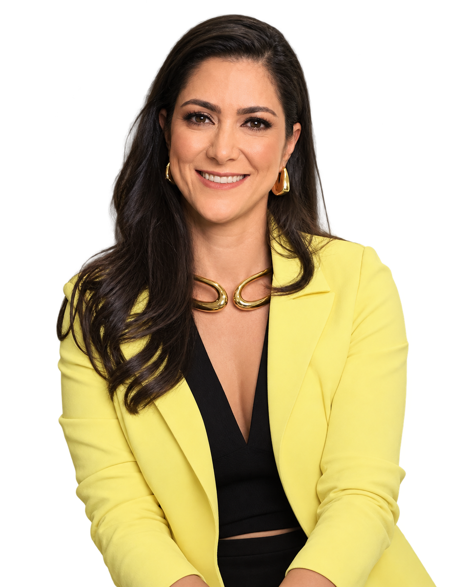
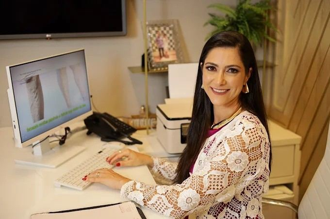
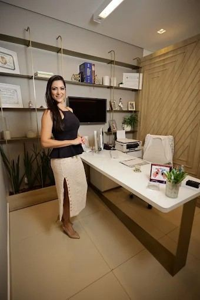
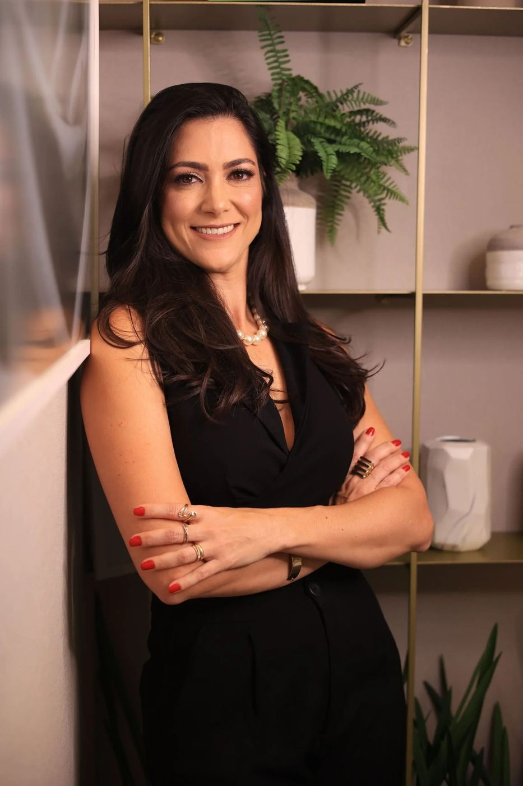
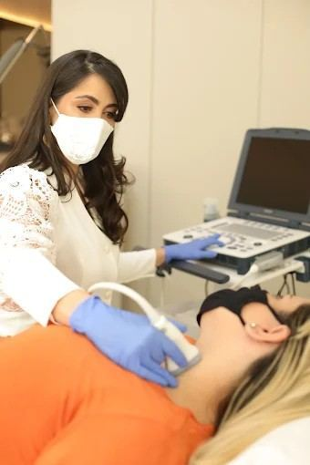

01.
Primeiro contato com a secretaria
Você escreve no WhatsApp, tira dúvidas de agenda e recebe orientação para a consulta. Sem rodeio. Com pontualidade desde o início.
Dra. Viviane Verônica Angiologia e Cirurgia Vascular · Uberlândia
CRM-MG 48.087 · RQE 28.650
Tratamento moderno e humanizado de varizes em Uberlândia. Você sai da consulta entendendo o que está acontecendo e qual o próximo passo, com escuta atenta e conduta precisa.
Agendar minha consulta agora* Particular e Unimed. Valores confirmados no agendamento.
* Consultas presenciais no UMC, para adultos.




Médica formada pela Universidade Federal de Uberlândia (UFU) desde 2008, com residência em Cirurgia Geral pela mesma instituição e especialização em Cirurgia Vascular pela USP Ribeirão Preto. Título de especialista pela Sociedade Brasileira de Angiologia e Cirurgia Vascular (SBACV).
Mais do que títulos, o diferencial está na escuta atenta e na empatia com cada paciente. No Uberlândia Medical Center, a consulta une conhecimento técnico, acolhimento e procedimentos modernos, com foco em qualidade de vida. Objetivo claro: pernas leves, vida ativa.
CRM/MG 48087 · RQE Cirurgia Vascular 28650
Conversar sobre a minha agendaSe você sente dor nas pernas, nota inchaços, vasos aparentes ou já passou por episódios de trombose, saiba que existe solução, e ela pode ser mais simples do que você imagina.
Tratamentos modernos, minimamente invasivos e com rápida recuperação, para cuidar da sua saúde vascular com conforto e segurança.
Procedimentos com mínimo desconforto e recuperação rápida.
Agendar consulta agora* Particular e Unimed. Valores no agendamento.
* Atendimento presencial no UMC, adultos.
Cada encontro tem um ritmo: ouvir com atenção, investigar com método e decidir juntos, com evidência e respeito ao seu tempo.
“Pernas leves, vida ativa.”
Você escreve no WhatsApp, tira dúvidas de agenda e recebe orientação para a consulta. Sem rodeio. Com pontualidade desde o início.
No UMC, a conversa contempla sintomas, exames anteriores e o que mais importa para você. Adultos. Particular e Unimed.
Quando necessário, o Doppler entra no raciocínio. A conduta pode incluir escleroterapia com espuma, laser transdérmico, laser endovenoso ou cirurgia. Sempre explicada.
O acompanhamento segue com retornos alinhados ao seu caso. A secretaria permanece disponível para dúvidas de agenda e orientação.
Dor, queimação ou peso nas pernas podem sinalizar varizes e alteração na circulação. Tratamentos modernos, seguros e com retorno rápido à rotina.
→ Em muitos casos, sem necessidade de internação.
Acúmulo de líquido e cansaço constante podem estar ligados à má circulação. Condutas clínicas e procedimentos minimamente invasivos aliviam os sintomas.
→ Mais leveza no dia a dia, com plano individualizado.
Vasinhos aparentes incomodam esteticamente e também podem indicar alteração circulatória. Escleroterapia com glicose ou espuma melhora o aspecto com segurança.
→ Conforto, autoestima e cuidado com a circulação.
Diagnóstico preciso e acompanhamento individualizado em trombose e alterações circulatórias, com terapias atuais para prevenir novos episódios.
→ Critério clínico e segurança em cada etapa.
Exame não invasivo e indolor, com imagens em tempo real. Ajuda a identificar trombose, refluxo em varizes e estreitamentos arteriais.
→ O laudo ganha sentido quando alguém explica o que ele pede.
Opção não cirúrgica para varizes, feita em consultório. A espuma esclerosante fecha o vaso doente, que é absorvido pelo organismo com o tempo.
→ Procedimento ambulatorial, com plano feito para o seu caso.
Tecnologia moderna para condições estéticas e vasculares, com protocolos personalizados e seguros, visando resultado e bem-estar.
→ Protocolo sob medida, sem fórmula genérica.
Tratamento minimamente invasivo que atua dentro da veia comprometida. A energia do laser fecha o vaso doente e redireciona o fluxo para veias saudáveis.
→ Tecnologia endovenosa com recuperação pensada para a rotina.
* Particular e Unimed. Valores no agendamento.
* Consultas presenciais no UMC · Uberlândia.
Agenda e dúvidas pontuais pelo WhatsApp. Você não fica sem resposta quando precisa confirmar um retorno.
Formação UFU e USP Ribeirão Preto, com título de especialista pela SBACV e atendimento atualizado em tecnologias vasculares.
Consulta reservada, com tempo e discrição. Suas queixas, exames e decisões ficam no consultório.
Consultório no Edifício Centro Clínico do Uberlândia Medical Center, Jardim Karaíba, com estrutura de apoio.
Tratar como gostaria de ser tratada: pontualidade, carinho e explicações claras em cada retorno.
Indico Doppler e procedimentos quando a evidência pede, e explico o porquê de cada escolha.
KCS
Opinião verificada · Doctoralia
★★★★★
Profissional exemplar em Angiologia. Paciente, clara e com domínio científico. Escuta qualificada, atenção individualizada e tranquilidade no atendimento.
Vera Lúcia
Opinião verificada · Doctoralia
★★★★★
Confiança e acolhimento desde a secretaria. Explicações claras, dúvidas sanadas, detalhista e eficaz no que se propõe a fazer.
Camila
Consulta verificada · Doctoralia
★★★★★
Consulto desde 2018. Sempre atenciosa e responsável. Toda a família virou paciente.
Mariana
Consulta verificada · Doctoralia
★★★★★
Profissionalismo e humanidade. Tirou todas as dúvidas e explicou tudo com cuidado.
Mirilane Marques
Consulta verificada · Doctoralia
★★★★★
Educação extraordinária e competência. Resultado maravilhoso. Super recomendo.
Gabriela Teixeira
Consulta verificada · Doctoralia
★★★★★
Paciente há anos. Une atendimento humanizado e competência. Indico para todos.
Cyntia Goulart
Consulta verificada · Doctoralia
★★★★★
Excelente atendimento da recepção e da Dra. Viviane. Atenciosa e esclarecedora.
D.S.
Opinião verificada · Doctoralia
★★★★★
Excelente profissional, em todos os sentidos. Recomendo sempre.
Andressa Moreira
Avaliação verificada · Google
★★★★★
Excelente médica, atenciosa, desde o contato pelo WhatsApp com a secretária até o pós-atendimento. Explicação clara e coerente, muito educada e assertiva.
Giselle Lima
Avaliação verificada · Google
★★★★★
Atendimento excelente desde a recepção. Na primeira consulta, a Dra. Viviane foi dedicada, atenciosa e cheia de empatia, explicando tudo com muita clareza.
Cássia de Freitas
Avaliação verificada · Google
★★★★★
Profissional incrível, com um coração cheio de amor e cuidado. Atendimento maravilhoso e carinhoso, explica tudo de forma clara e tranquila. Recomendo muito!
Fale com a secretaria. Ela orienta agenda, convênio e o que levar na primeira consulta.
Falar no WhatsAppUberlândia Medical Center
Rua Rafael Marino Neto, 600 · Portaria
Edifício Centro Clínico · 2º andar · Recepção 2
Jardim Karaíba · Uberlândia/MG · 38411-186
Seg. a qui. à tarde · Sex. de manhã
Preencha os campos. A secretaria responde pelo WhatsApp com horários e orientações.

Agende sua avaliação vascular em Uberlândia com tratamento moderno e humanizado.